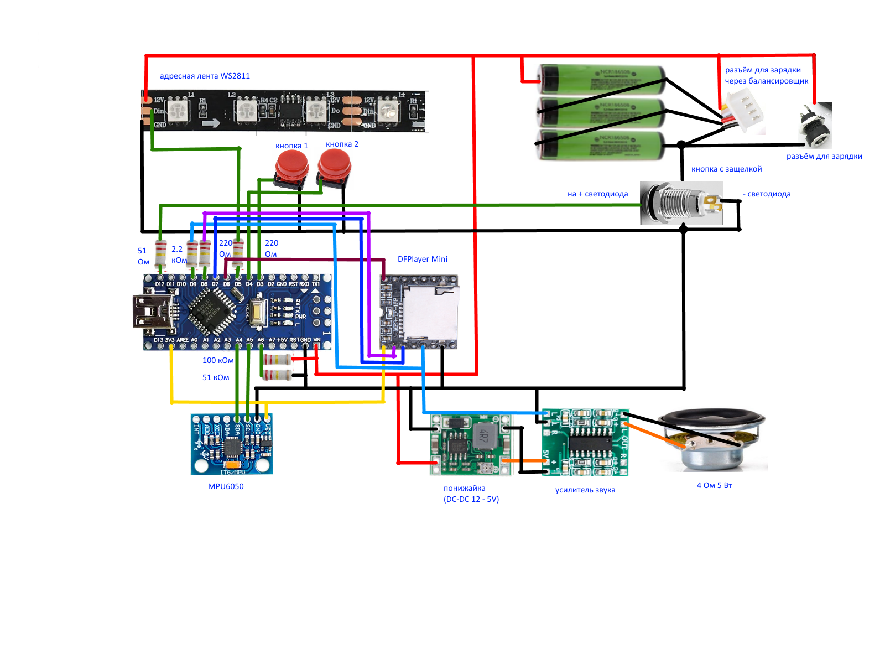

Родительский проект: КРУТЕЙШИЙ СВЕТОВОЙ МЕЧ СВОИМИ РУКАМИ от Алекса Гайвера
Редактирование звука: Audacity
Схема:

Карта памяти - любая micro SD карта. Нужно скопировать содержимое папки SDsounds проекта в корень карты.
Прежде, чем подключать питание к усилителю звука, нужно отрегулировать напряжение на выходе понижайки 5В с помощью микроподстроечника на ней.
На одной макетке собрал ATMega328 Nano, DFPlayer, MP6050, усилок, понижайку. Впаял разъёмы для подключения питания и светодиода, кнопок, динамика, светодиодной ленты. MP6050 поставил перпендикулярно оси меча и закруглил углы. Эта макетка шириной 30 мм идеально входит в трубу меча.
Кнопки управления собрал на другой макетке и на стойках прикрутил ее к ручке меча изнутри. В ручке под кнопки просверлил 2 отверстия 12мм и еще 2 под винты 3мм для стоек.
Аккумы спаял между собой полосками жести от консервной банки. Использовал паяльную кислоту и паяльник 100 Вт. Сделал батарею 2 + 1 аккум, обмотал малярным (бумажным) скотчем, чтобы не коротило ничего. 2 аккума по толщине идеально входят в трубу ручки 40мм. И еще один входит под плату с кнопками.
Разъем под зарядку и кнопку включения выбрал самые тонкие - 8мм. Чтобы сильно не торчали, утопил их внутрь ручки. Для этого в месте их крепления вставил в раструб кусок трубы того же диаметра - 40мм. В раструбе сделал отверстия по 10мм, чтобы кнопка и гдездо зарядки провалились через них, а в куске трубы под ними отверстия по 8мм и закрутил изнутри гайками.
У меня была кнопка с очень мягкой пластмассой. Поэтому паять надо аккуратно - не перегревать.
Разъем для балансировщика вывел с другого конца трубы и оставил его внутри. То есть чтобы заряжать через него, нужно разобрать меч. Но, надеюсь, это понадобится делать не часто. Если саморазряд у каждого из трех аккумов одинаковый, то штатного гнезда для зарядки должно хватать. Но если меч перестал заряжаться на 100%, то можно попробовать зарядить его балансировщиком.
Отверстия для смягчения звука можно не делать, если динамик не ловит резонанс и нет искажений. Но кому-то звук может больше понравиться с ними - на любителя. По моим ощущениям с отверстиями басы уменьшались.
Динамик 40мм нормально заходит в уплотнительную резинку раструба. Эти резинки мне попадались двух типов - с и без канавки посередине. Нужно найти с канавкой, в нее динамик и входит. Штатно в этой канавке лежит пластиковая пружинка для жесткости, как я понимаю. Ее можно оставить. Если динамик упирается контактами, то можно их аккуратно убрать и подпаяться к проводам катушки напрямую. В местах возможного касания с корпусом использовать термоусадочную трубку для изоляции.
Для защиты динамика использовал сетку для раковины из нержавейки. Ее нужно обрезать хорошими ножницами и сточить острые углы. Я использовал болгарку для этого.
Светодиодную ленту собрал из двух одинаковых кусков по 16 сегментов (48 диодов). Склеил их обратными сторонами (с клеем) в одинаковом направлении стрелок. Контакты 12V, GND, DI на двух кусках подпаял параллельно и вывел шлейф с разъемом. Закрутил ленту в упаковочную пенку в виде колбаски и обмотал прозрачным скотчем. Запихнул полученную колбаску в трубу меча. Пенка хорошо убирает зернистость - отдельные светодиоды не видны. И в ней лента не болтается и не боится ударов. У меня пенка осталась от какой-то посылки, но можно использовать ту, что стелится под ламинат.